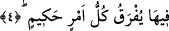

defa ümmetinin tamamına şefaat hakkı verilmiştir. Ancak at ve devenin serkeşlik ederek
sahibinden kaçması gibi Allah’ın af ve mağfiretinden kaçan kimse yine bu şefâat
kapsamı dışındadır.
Bir başka rivâyete göre Hz. Âişe (r.anhâ) validemiz şöyle demiştir: “Ben Hz.
Peygamber’i (s.a.) Berat gecesinde secdeye kapanıp duâ ederken gördüm. Cebrâil
(a.s.) indi ve şöyle buyurdu. Allah Teâlâ bu gece senin şefâatınla ümmetinin üçte
birini cehennemden âzâd etti. Peygamberimiz (s.a.) yine duâya devam etti. Cebrâil
(a.s.) ve Ey Muhammed (s.a.) Allah Teâlâ sana selâm ediyor ve ümmetinin yarısını
cehennemden âzâd ettiğini söylüyor dedi. Peygamberimiz (s.a.) istek ve duâsında
ısrarlı olmaya devam etti. Cebrâil (a.s.) yine indi ve Allah Teâlâ senin şefaatinle
ümmetinin hepsini cehennemden âzâd etti buyurdu. Ancak üzerinde kul hakkı olanlar,
bunu edâ etmedikleri ve hak sahibini râzı etmedikleri sürece bu şefâat kapsamı
dışında kalırlar. Peygamberimiz (s.a.) bunlar için de ısrarla duâ edince Cebrâil (a.s.)
sabahleyin yine indi ve Allah Teâlâ senin ümmetinden kul haklarına da kefil olup hak
sahibini kendi fazl ü kereminden râzı edecektir. Artık onlar da af ve şefâat
kapsamındadır buyurdu. Bunun üzerine Peygamberimiz (s.a.) bu durumdan çok
memnun oldu.”
6. Allah Teâlâ Berat gecesinde Zemzem suyunu gözle görülür bir şekilde
artırmaktadır. Burada hakîkat ehlinin gönüllerindeki ilâhî ilimlerin artmış olduğuna da
işâret vardır.
“Çünkü biz, uyarıcıyız” bu ifâde Allah’ın kitabı indirmesinin muktezâsı hakkında
meydana gelen bir istifhâmı ortadan kaldırmaktadır. Sanki şöyle denmektedir: “Biz
Kur’ân’ı indirdik. Çünkü âhirette verilecek cezâ hakkında uyarma ve ondan korkutma
bizim şânımızdandır.”
4. Her hikmetli emir, o gecede ayırd edilir;
Kulların îman ve küfür hariç olmak üzere bir yıllık rızık ve ecellerine dâir bütün
muhkem işler o gece yazılıp tafsîl edilir. Bu yazılma işi, bu geceden senenin sonuna
kadar sürer. Levh-i Mahfûz’da yazılan hususların dosyalandırılmasının Berat gecesinde
başlayıp Kadir gecesinde tamamlandığı da rivâyet edilmiştir. Buna göre rızıkla ilgili
dosya Mikâil’e (a.s.), harp ve savaşlar, deprem, yıldırımlar ve göçükler dosyası
Cebrâil’e (a.s.), ameller dosyası birinci kat semânın sorumlusu olan ve büyük bir melek
olan İsrâfil’e (a.s.), musîbetler dosyası ise ölüm meleği olan Azrâil’e (a.s.) verilir.
Öyle ki bir adam çarşı pazarda dolaşıp durur, bir başka adam evlenir ve çocuğu olur
ama adı o yıl ölecekler dosyasında yer alır.
Denilmiştir ki: Melekler arasında Mikâil’den (a.s.) daha halîm, merhametli ve